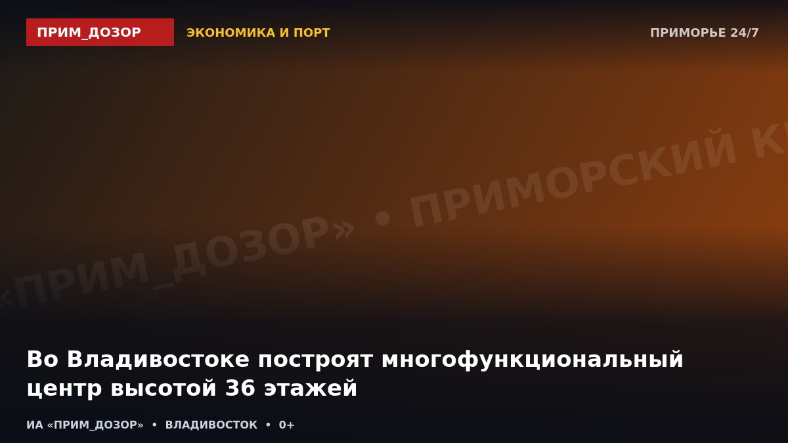

Во Владивостоке построят многофункциональный центр высотой 36 этажей
Во Владивостоке на Некрасовском путепроводе начнется строительство многофункционального центра высотой 36 этажей. Администрация города приняла решение увел...

Во Владивостоке на Некрасовском путепроводе начнется строительство многофункционального центра высотой 36 этажей. Администрация города приняла решение увел...